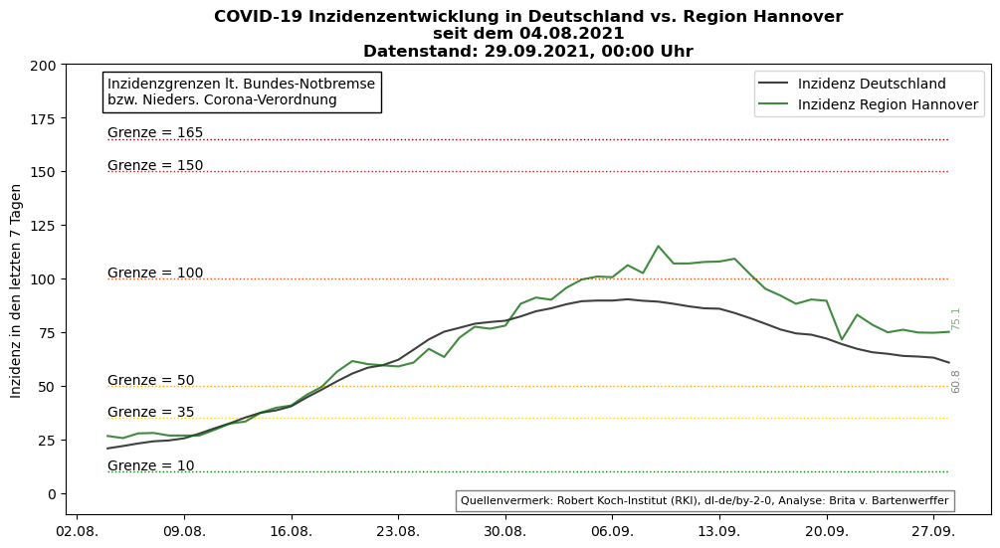
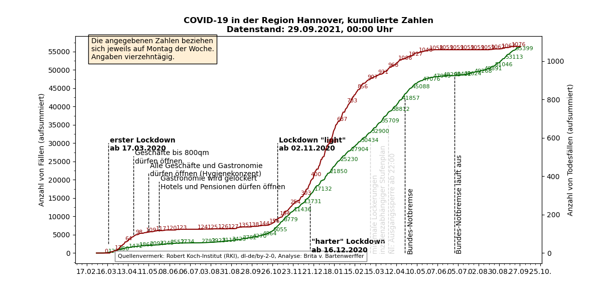
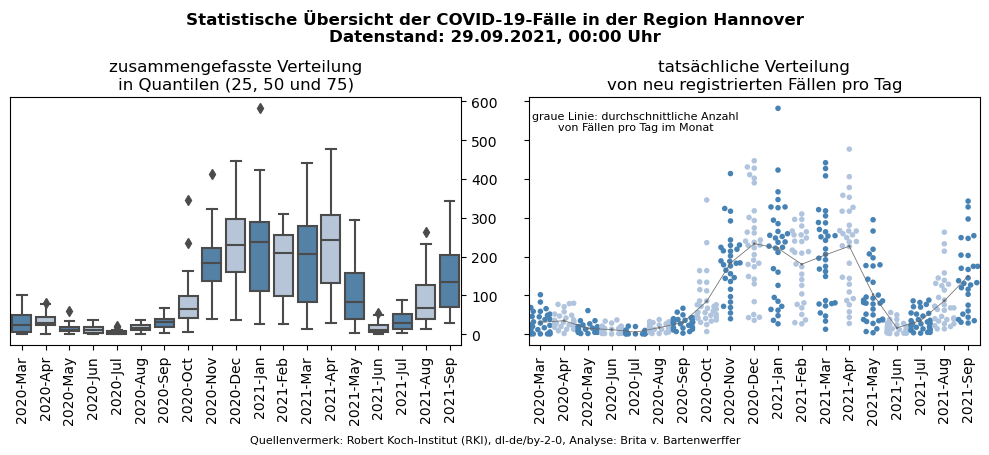
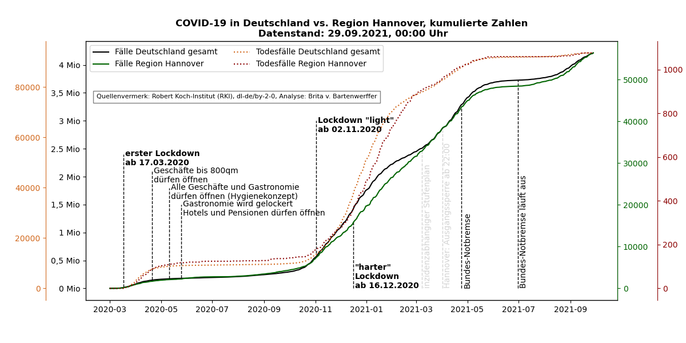
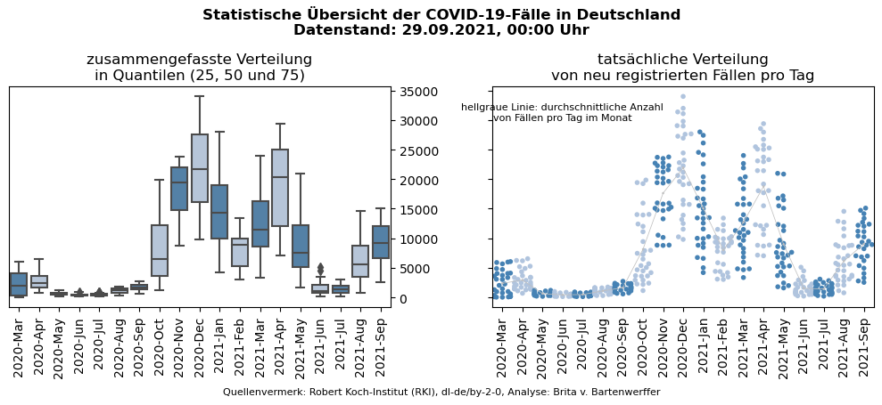

Inhaltsverzeichnis
Entwicklung der Inzidenzen in den letzten acht Wochen
Statische Plots Covid-19 für die Region Hannover
Vergleich Covid-19 für Deutschland und die Region Hannover
Interaktive Plots Covid-19 für die Region Hannover
Entwicklung der Inzidenzen in den letzten acht Wochen
Hinweis: Die Inzidenzen wurden nicht vom RKI bereitgestellt, sondern aus den vom RKI übermittelten
tagesaktuellen Zahlen selbst errechnet. Dadurch kann es zu Abweichungen kommen, insbesondere wenn
die bereitgestellten Zahlen im Nachhinein korrigiert wurden.

Statische Plots Covid-19 für die Region Hannover
Fall- und Todesfallzahlen gesamt

Fall- und Todesfallzahlen in den letzten 8 Wochen

Statistische Plots gesamt

Vergleich Covid-19 für Deutschland und die Region Hannover
Fall- und Todesfallzahlen gesamt

Fallzahlen und Inzidenzen seit Beginn des Lockdown "light"
Statistische Plots gesamt

Interaktive Plots Covid-19 für die Region Hannover